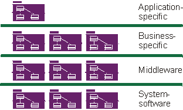

|

Component-based architecture with layers
A Component Architecture is an architecture based on replaceable components as described in Concept: Component. Because Component Architectures are based on independent,
replaceable, modular components, they help to manage complexity and encourage re-use.
Use cases drive the Rational Unified Process (RUP) end-to-end over the whole lifecycle, but the design activities are
centered around the notion of system architecture and, for software-intensive systems, software architecture. The main
focus of the early iterations of the process-mostly in the elaboration phase-is to produce and validate a software architecture, which in the initial development cycle takes the form
of an executable architectural prototype that gradually evolves to become the final system in later iterations.
By executable architecture, we mean a partial implementation of the system built to demonstrate selected system
functions and properties, in particular those satisfying non-functional requirements. The purpose of executable
architecture is to mitigate risks related to performance, throughput, capacity, reliability, and other "abilities", so
that the complete functional capability of the system may be added in the construction
phase on a solid foundation, without fear of breakage.
For an introduction to the notion of architecture-most specifically software architecture-and an explanation of why
this notion is crucial, see Concept: Software Architecture.
The RUP provides a methodical, systematic way to design, develop, and validate an architecture. We offer templates for
architectural description around the concepts of multiple architectural views, and for the capture of architectural
style, design rules, and constraints. The Analysis and Design discipline contains specific activities aimed at
identifying architectural constraints and architecturally significant elements, as well as guidelines on how to make
architectural choices. The management process shows how the planning of the early iterations takes into account the
design of an architecture and the resolution of the major technical risks. See the Project Management discipline and all activities associated with the
Role: Software Architect for further information.
Architecture is important for several reasons:
-
It lets you gain and retain intellectual control over the project, to manage its complexity and to maintain system
integrity.
A complex system is more than the sum of its parts; more than a succession of small independent tactical decisions.
It must have some unifying, coherent structure to organize those parts systematically and it must provide precise
rules on how to grow the system without having its complexity "explode" beyond human understanding.
The architecture establishes the means for improved communication and understanding throughout the project by
establishing a common set of references, a common vocabulary with which to discuss design issues.
-
It is an effective basis for large-scale reuse.
By clearly articulating the major components and the critical interfaces between them, an architecture lets you
reason about reuse-both internal reuse, which is the identification of common parts, and external reuse, which is
the incorporation of ready-made, off-the-shelf components. However, it also allows reuse on a larger scale: the
reuse of the architecture itself in the context of a line of products that addresses different functionality in a
common domain.
-
It provides a basis for project management.
Planning and staffing are organized along the lines of major components. Fundamental structural decisions are taken
by a small, cohesive architecture team; they are not distributed. Development is partitioned across a set of small
teams, each responsible for one or several parts of the system.
Component-based development is a variation on general application development in which:
-
The application is built from discrete executable components which are developed relatively
independently of one another, potentially by different teams. These are referred to in RUP as "assembly
components". See Concept: Component for a more detailed definition.
-
The application may be upgraded in smaller increments by upgrading only some of the assembly components
that comprise the application.
-
Assembly components may be shared between applications, creating opportunities for reuse, but also
creating inter-project dependencies.
-
Though not strictly related to being component-based, component-based applications tend to be
distributed.
Assembly components result from the following:
-
In defining a very modular architecture, you identify, isolate, design, develop, and test well-formed components.
These components can be individually tested and gradually integrated to form the whole system.
-
Furthermore, some of these components can be developed to be reusable, especially the components that provide
common solutions to a wide range of common problems. These reusable components, which may be larger than just
collections of utilities or class libraries, form the basis of reuse within an organization, increasing overall
software productivity and quality.
-
More recently, the advent of commercially successful, component infrastructures-such as CORBA, the Internet,
ActiveX, JavaBeans, .NET and J2EE - trigger a whole industry of off-the-shelf components for various domains,
allowing you to buy and integrate components rather than developing them all in-house.
The first point in the preceding list exploits the old concepts of modularity and encapsulation, bringing those
concepts underlying object-oriented technology a step further. The last two points in the list shift software
development from programming software one line at a time, to composing software by assembling components.
The RUP supports component-based
development in these ways:
-
The iterative approach allows you to progressively identify components, and decide which ones to develop, which
ones to reuse, and which ones to buy.
-
The focus on software architecture allows you to articulate the structure-the components and the ways in which they
integrate-which include the fundamental mechanisms and patterns by which they interact. This in turn supports the
planning aspects of project management, in that the component dependencies can help determine which components can
be developed concurrently, and which sequentially.
-
Concepts, such as packages, subsystems, and layers, are used during Analysis & Design to organize components
and to specify interfaces.
-
Testing is first organized around components, then gradually around larger sets of integrated components.
For more on components, refer to Concept: Component.
|